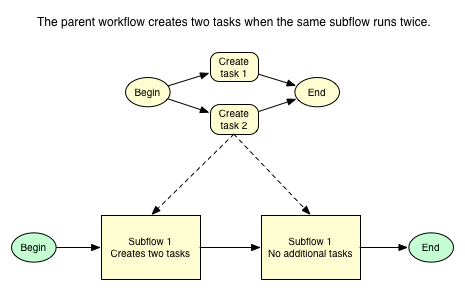

Using Subflows
| |
Note: This article applies to Fuji. For more current information, see Workflows Used as Subflows at http://docs.servicenow.com
The ServiceNow Wiki is no longer being updated. Please refer to http://docs.servicenow.com for the latest product documentation. |
Contents
1 Overview
A workflow can launch another workflow as an activity. The parent workflow triggers the subflow and then waits for the subflow to complete before continuing. You can run the workflow validation tool prior to publishing to detect missing subflows and other dependency problems, such as those involving update sets.
The editor contains activities for each available workflow in the instance:
Make sure that the selected subflow is active. If the subflow is inactive, the main workflow will hang with a Loading message. If you place an inactive subflow into a workflow, the subflow appears with a red banner, indicating that it cannot run. An active subflow is hightlighted in blue when selected.
2 Create Task Activities in Subflows
If a workflow contains a Create Task activity that has executed on the current record, additional task activities in the workflow might not execute as expected. This can happen when the same subflow containing a Create Task activity runs more than once in a parent flow. When the subflow reruns and attempts to execute the Create Task activity again, the system reopens the first task activity instead and does not create an additional task. To avoid this, do not run the same subflow containing a Create Task activity more than once in a workflow.
| |
Note: An alternative to creating duplicate subflows that use the Create Task activity is to add a Run Script activity to the workflow that creates a task with a script. |
|  | 
|
3 Passing Variables from a Workflow to a Subflow
Perform the following procedures to pass variables from a parent workflow to a subflow:
- Define Inputs: Prepare the subflow to accept variables from the parent workflow.
- Invoke the Subflow: Include the subflow in the parent workflow and connect the inputs to the parent workflow variables.
| |
Note: Subflows on the Requested Item [sc_req_item] table in the Service Catalog cannot accept variables from parent workflows. |
3.1 Defining Inputs
Define the input variables for a workflow to request from parent workflows when it is launched as a subflow. These inputs are stored in the Variables [var_dictionary] table.
- In the editor, open and check out the workflow.
- In the title bar, click the menu icon (gear icon in releases prior to Fuji) and select Edit Inputs.
- In the Workflow Inputs window, click New.
- Populate the record with the definition of the variable, including the column name, the label that is displayed to the user, and the type of field.
- Click Submit.
3.2 Invoking the Subflow
To use a subflow in a workflow:
- In the workflow editor, open and check out the parent workflow.
- Drag the subflow to the parent workflow.
- In the New Activity dialog box, define the variables defined by the subflow's Inputs. These fields can accept both static values or variables in the following format:
${variable_name}
- Click Submit.
The workflow will trigger the subflow at the appropriate time, and pass along the variables as indicated by the Inputs definition.
3.3 Example
3.3.1 Preparing the Subflow
- In the editor, open and check out the workflow that you want to use as a subflow.
- In the title bar, click the menu icon and select Edit Input.
- In the Workflow Inputs window, add a new variable depending on the type of values that it is going to store.
- The following example sets up a string value.

- Create a Run Script activity on the subflow.
- a. Set the value from the parameter to a field on the current form.
- This is important because the Notification activity can only pull values from the current variable; it cannot pull values from the newly added variable.
- The following example sets the value in the Description field.
- b. Create a new field on the request form but do not display it.
- This serves as a temporary store.
current.description = workflow.inputs.raysubvariable;
- a. Set the value from the parameter to a field on the current form.
- In the Notification activity, use ${description} in the subject to return the value from the field.

{kind=link}
{kind=link}
{kind=link}
{kind=link}
{kind=link}
{kind=link}
{kind=link}
3.3.2 Preparing the Workflow
- On the parent workflow, create a variable similar to what you did on the subflow, but name it something different.
- Insert a Run script activity to return the value from a field to the newly created variable.
- In the subflow activity, set the Ray Sub Variable to pass the raymainvariable to the raysubvariable.
{kind=link}
{kind=link}
{kind=link}
{kind=link}
4 Returning Values from a Subflow to a Workflow
You can also use the Return Value activity in the subflow to return values to the parent workflow. Make sure to have a Return Value on every ending transition path.